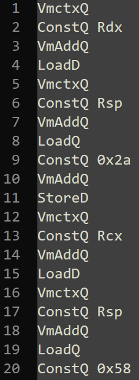

I always wanted to analyze a binary file protected with virtualization, I've read a few papers (some of them I will link at the end of the article). But it always seemed way too hard for me, especially with all of the obfuscation and code mutation commercial virtualizer use.
I needed something I could learn from and that didn't add much obfuscation to the PE, introducing Guardian-rs
This open source project is written in rust and implements a simple stack-based VM.
Let's begin !
Protecting a function
I created this simple test function that will be virtualized :
Notice the #pragma optimize("", off), this way the compiler doesn't optimize out the function.
Loading up the code in IDA I can see the following assembly code for the calc function :
So far, so good.
After protecting the function with Guardian-rs (which was actually pretty fast) :
We can see that the code of the function got replaced with a jmp preceded by a push .
What could this possibly mean ??
Understanding the VM structure
A typical Virtual machine usually follows this architecture (I stole the image from msreverseengineering's blog) :
Following this pattern, we can enter in the VMEntry function and continue our analysis :
We can see that the flags and the registers are pushed onto the stack to keep the program state as it was.
Then the VM will initialize its internal structures, mainly the Machine structure which mainly holds :
- The program counter
- The stack pointer
- The registers
- The flags
Note that the VM uses syscalls to NtAllocateVirtualMemory to allocate its context.
Then the VM pops the registers and copies them to its internal context structure, this way, the interpreted bytecode can inherit from the "normal" context of the program.
And finally the VM calls the VMDispatcher . The role of this function is to read, decode and interpret the opcodes of the function. In its most primitive implementation, it's as simple as a function pointer.
Before calling the function, the VM pushes the address of the first instruction to be executed onto the stack. Which is the offset pushed by the calc function (just before the jmp ), plus the base address of the program (fetched using the Thread Environement Block).
Following this address we can find the bytecode for our function !
Writing a bytecode disassembler
At this stage, we'd have to reverse engineer the VMDispatcher to understand how the bytecode is encoded but I instead decided to cheat and look at the source code of the virtualizer (lol).
The bytecode follows this simple format :
| Mnemonic (1 byte) | Size of the data (1 byte) | Argument (1 byte or more) |
|---|---|---|
| 0x16 (Vmctx) | 0x08 (Qword) | None |
| 0x00 (Const) | 0x08 (Qword) | 0x20 (Rdx) |
Following this example, we can retrieve the first instructions of our function !
Using this simple logic and by looking at the existing code of Guardian-rs I could write a disassembler (code here ).
It gave me the following code :

We can see a few Vmctx which pushes a pointer to the Machine struct onto the stack.
Basically in 8 lines it has copied the content of ~Rdx~ and ~Rsp~ at the top of the stack.
Conclusion and todo list
Todo :
- Translate the disassembly into intel x86 assembly
- Automate the process
- Optimize the code
There is still work to be done but i'm pretty proud of what I did, especially considering it's my first time reversing a VM.
I want to thank the author of the Guardian-rs project who kindly responded to my questions and to the people who made the articles I based my work on :
To be continued...